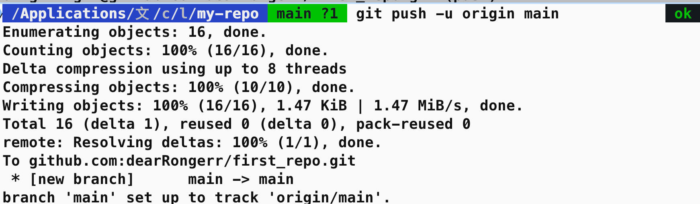

GitHub¶
新建仓库：
1 2 3 4 5 6 7 | |
向已有仓库推送
1 2 3 | |
新建仓库¶
1、查看 git 版本

2、初始化仓库（新建仓库）

3、删除了 .git 也就是删除了仓库
4、git init 指定参数，表示在哪儿初始化一个新的仓库
注意看绿色的分支（怎么那么丑，算了，无所谓）
5 git clone 新建仓库

有 .git 文件，就是一个远程仓库
工作区域和文件状态¶

添加和提交文件¶


- git 支持使用通配符，将文件添加到暂存区


git add .提交当前文件夹下的所有文件

查看提交记录¶
git log：查看复杂的提交记录
git log --oneline ：查看简洁的提交记录

每次提交都有一个 id 号
第三个提交时，直接输入的
git commit，会进入vim提示输入提交信息按键盘
i进入编辑模式编辑完以后，按键盘
esc，回到命令行模式，然后输入
:wq保存编辑的内容
配置作者信息¶
- Author 的信息，包括 username 和邮箱是通过
git config配置的：

这里，因为用户名中间有空格，所以使用双引号括起来
配置完用户名可以配置邮箱：

因为邮箱中间没有空格 ，所以可以省略掉双引号

git reset¶
回退版本

工作区 》》暂存区》》本地仓库（真正提交保存起来）
示例：

查看工作区的内容：ls
查看暂存区的内容：git ls-files
三个文件，三次提交


- git reset --soft ##回退的版本 id##
×：


√

git log --oneline:

头指针的位置也变了
- git reset --hard HEAD^ (hard reset 回退到上一个版本)


hard 模式，工作区文件被删了，暂存区文件也被删了，提交历史也只剩下一个了
当使用 hard 参数回退到上一个版本的时候，工作区和暂存区的内容都会被清空
- 默认 mixed 模式

git add 到暂存区
git commit 到仓库
git reset --soft 撤销 git commit 操作（回到暂存区）
git reset --hard 删除工作区和暂存区（工作区也没了）
git reset --mixed 保存工作区，删除暂存区（回到工作区）
误操作 git reflog¶
git 保存所有操作，使用 git reflog 查看所有操作对应的版本号

回到对应的版本：

git log --oneline查看当前所处的版本


git diff¶
查看差异
git rm¶
删除文件
（1）查看本地仓库中的内容

（2）删除文件 1

（3）查看仓库状态，显示文件 1 已经被删除了

（4）这里涉及到一个问题，本地工作区的文件已经被删除了，但是暂存区的文件还没有删除
- 这里也是提示，需要更新暂存区

- git ls-files 查看暂存区的内容

- 因此执行 git add 操作，告诉 git，我们已经删除了文件 1
可以执行 git add . 或者执行 git add file1.txt
再次查看暂存区的内容

-
总结：这种从本地删除文件，再告诉暂存区已经删除了文件的做法十分复杂，因此 git rm 命令
-
删除文件 2，查看暂存区，工作区，git status


总结，只需要执行一次 git rm 命令，git 就能把文件从工作区和暂存区同时删除
- 最后执行提交，从版本库中也删除掉

- 总结：

.gitignore¶
告诉 git 不应该添加到版本库中的文件
工作区》》暂存区》》版本库

- 现有两个日志文件，access.log 、 other_access.log
将access.log添加到 .gitignore文件
- git status 查看状态

已经看不到 access.log 文件了，接下来执行，添加到暂存区，提交到版本库，

.gitignore中写"*.log"，通配符忽略掉所有 .log文件- 需要注意的一点是，
.gitignore忽略掉的文件是 还没有被添加到版本库中的文件，那此时，如果想把已经上传到版本库中的 log 文件，从版本库中删除，却不从本地删除应该怎么办呢？
（1）使用 git rm --cached other.log，将想要忽略的日志文件从暂存区删除

（2）查看工作区文件，日志文件还在，此时再提交到远程仓库，再修改 other.log文件，此时 git status 查看仓库状态，仓库也是没有任何变化的。
- git不会追踪空文件夹

- 在空文件夹下新建一个文件，git status 查看文件状态，显示文件被追踪到了

- linux命令

vi .gitignore文件，将temp/文件夹添加到.gitignore中，git 会忽略掉整个文件夹

- git status -s 查看仓库状态，简略显示
显示 gitignore 文件被修改过
- git commit -am
（1）文件**a.txt处于已跟踪**，但未暂存状态。这时，如果使用**git commit -m是无法提交最新版本的a.txt的**，提交的只是最开始空内容的旧版本a.txt
（2）要提交**新版本a.txt**，即内容为**'a'的a.txt**，则需要使用**git add a.txt**，将新版本的a.txt放到staged暂存区，然后才能使用git commit -m进行提交
（3）而如果使用**git commit -am**，则可以省略**git add a.txt**这一步，因为**git commit -am可以提交跟踪过的文件**，而a.txt一开始已经被跟踪过了
SSH配置和克隆仓库¶
- 新建远程仓库
- 添写仓库名称

可选：项目描述、是否添加 gitignore 文件，readme文件
（1）如果本地没有仓库，执行如下命令，在本地创建仓库并和远程仓库关联起来

（2）如果本地有仓库

- 远程地址的两种方式：

（1）HTTPS，在把本地仓库的代码 push 到远程仓库的时候，需要验证用户名和密码
（2）SSH，git 开头的是 SSH 协议，这种方式在推送的时候，不需要验证用户名和密码，但是需要在 github 上添加SSH公钥的配置（推荐）
- 配置 SSH秘钥
（1）本地 使用 SHH 克隆 远程仓库
1 | |

报错是因为没有配置 SSH 秘钥导致的，使用 SSH 的方式必须配置 SSH 的秘钥
（2）回到根目录，进入 .ssh目录

（3）使用 ssh key generate 生成秘钥，-t 表示指定协议为RSA，-b 指定生成大小为 4096
1 | |
（4）会提示输入秘钥名称

🟢 如果是第一次生成秘钥，那么直接回车，就会生成一个 id_rsa 密钥文件
🟢 如果之前已经生成过了，需要重新命名一个文件，否则会覆盖掉之前的密钥文件，并且操作不可逆
这里重新命名了一个名为 test 的文件名，回车确定输入，后面输入密码，生成秘钥
🟢 如果不设置密码，就直接回车不输入密码即可

（4）查看本地目录


一个 test，私钥文件，谁要也不给
一个 test.pub，公钥文件，上传到github
(5) 打开公钥文件，复制公钥文件的内容


vi打开公钥文件，复制内容
（6）回到 github-->setting-->SSH and GPG keys -->New SSH key-->粘贴公钥内容到输入框中，标题输入任意名字即可-->Add SSH Key


（7）
- 如果在生成秘钥文件的时候，使用的是默认名称，那么秘钥配置就已经结束了
- 由于演示中生成密钥文件时，命名了 test密钥文件，所以需要再次配置：
创建 congifg文件，并把下面的 5 行添加到 config 文件中tail -5 config ，确保在访问github.com 的时候，指定使用SSH 下的 test 秘钥
1 | |

🔴 我那奇奇怪怪的错误
问题描述：
生成密钥时，想生成 test.pub 的密码，执行
tail -5 config去找 test.pub秘钥，结果出现了我不认识的代码想着，也许是因为我从来没有生成过秘钥，所以执行生成密钥文档时，直接一路回车。
🟢 使用默认秘钥配置成功了。
使用默认秘钥，不需要执行
tail -5 config

(8) 以上配置完成，回到本地仓库，执行 git clone 命令，会提示输入密码，也就是生成 ssh 秘钥时，输入的密码，如果没有输入密码，直接回车即可

（9）ls 查看本地，发现多了 remote-repo，表明将这个仓库克隆到了本地

（10）进入目录里面，多了 main 分支，表示这是一个仓库


（11）本地与远程仓库交互演示：


本地仓库和远程仓库的交互需要使用 push 和 pull 操作
- 使用 push 命令把本地仓库的修改内容推送给远程仓库，刷新远程仓库，显示新建的 hello.txt 推送到远程仓库。

关联本地仓库和远程仓库¶
将本地仓库，放到远程仓库
（1）github 上创建新仓库

（2）将本地 my-repo仓库和远程 first-repo仓库关联起来，复制 first-repo中的提示命令即可

📢 需要进入本地 my-repo 仓库，执行 git remote 操作。


（3）git remote -v 查看当前仓库所对应的远程仓库的别名和地址

显示为 （远程仓库的别名）origin 和地址

（4） 第二行，git branch -M main 指定==（本地）分支的名称为 main，这里默认的（本地分支）==名称就是 main，因此可以省略执行这行命令

（5）第三行，git push -u origin main 将本地的 main 分支和远程 origin仓库的main 分支关联起来
关于
git push -u origin main命令命令全称：
git push -u origin main:main将本地仓库和别名为 origin 的远程仓库关联起来
main:main 本地仓库的 main 分支推送给远程仓库的 main 分支，因为本地分支的名称和远程分支的名称相同，因此可以省略只使用一个 main
执行完 git push 操作，显示本地仓库的内容推送到了远程仓库



拉取远程仓库的修改合并到本地仓库¶
（1）远程仓库修改，添加 readme 文件-->点击add a readme-->编辑内容-->点击提交按钮-->刷新页面-->看到文件添加到远程仓库里面了


（2）问题描述：
远程仓库有了一个新的文件，但是本地还没有这个文件
使用 pull 拉取远程仓库中修改的内容
命令解释：远程仓库（origin）的 main 分支，拉取到本地。
🟢 省略远程仓库名和分支名，直接使用 git pull 命令，那么将默认拉取仓库别名为 origin的 main 分支，作用就是将远程仓库的指定分支拉取到本地再进行合并；ls 参看本地仓库文件，readme 文件拉取过来了。


暂存区的文件： git ls-files

git pull，ls查看文件列表
readme 拉取下来。
2025 年 2 月 26 日，告一段落，感谢。分支没学。用到了再说。
summary：本地仓库和远程仓库、连接